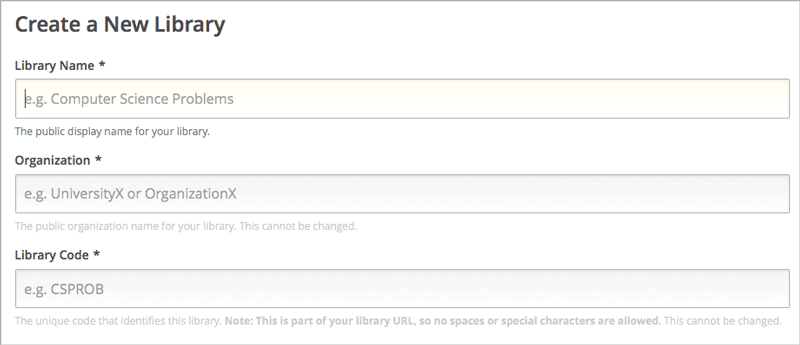
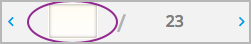

8.5. Working with Content Libraries#
This section describes how to work with content libraries in Studio.
8.5.1. Content Libraries Overview#
In Studio, you can create a library to build a pool of components for use in randomized assignments in your courses. You can add Text components, problems, and video components to a library. Open response assessment and discussion components are not supported in libraries.
Note
Content libraries are available only for courses that have course
identifiers in this format: {key type}:{org}+{course}+{run}. For
example, course-v1:edX+DemoX+Demo_2015. Your course identifier appears
in the browser address bar as the final part of the URL when you open your
course in Studio. For more details, see Create a Course.
After creating a library and adding components to it, if you have enabled content libraries in your course, you can use these library components in randomized assignments in your course. You do this by adding a randomized content block to a course unit and specifying the name of the library from which the randomized content is to drawn. You also specify the number and type of problems that each learner is assigned. For information about randomized content blocks, see Randomized Content Blocks.
Libraries have separate users and levels of access from courses. Initially, only the person who created the library has access. She can add other users to the library. For details, see Give Other Users Access to Your Library. The libraries that you create or have access to are listed on the Libraries tab on the Studio Home page.
8.5.2. Create a New Library#
Use content libraries to build a pool of components that can be used in randomized assignments in your courses.
To create a new library, follow these steps.
Log in to Studio.
Select New Library.
Enter the required information for your new library, then select Create.
Note
Enter new library information carefully. The values in these fields become part of the URL for your library, therefore the total number of characters in the Library Name, Organization, and Library Code fields must be 65 or fewer.
{kind=link}
For Library Name, enter the public display name for your library. Choose a meaningful name that will help you and other course team members to identify the library. For example, “Level 200 Math Problems”. When you add a randomized content block to a course unit, you use the library name to specify this library as a source for the randomized assignment.
For Organization, enter the identifier for your university. For example, enter HarvardX or MITx. Do not include spaces or special characters.
For Library Code, enter an identifier for your library that is unique within your organization. This code becomes part of the URL for your library, so do not include spaces or special characters in the code.
Select Create.
You see the new library, to which you can now add components. For information about adding components to a library, see Add Components to a Library.
After you create a library, you are automatically assigned an Admin role for the library. For information about adding other users to a library after you create it, see Give Other Users Access to Your Library.
8.5.3. Edit a Library#
After you create a library, the only change you can make to the initial library information is to the name. However, at any time, you can make changes to the components in your library, including adding or deleting components or editing the settings of components. For details about editing the contents of a library, see Edit Components in a Library and Add Components to a Library.
To change the name of a library, follow these steps.
Log in to Studio.
Select Libraries, then select the library whose name you want to edit.
Select the Edit icon next to the library name.
The library name field becomes editable.

In the library name field, make edits or enter a new library name.
Select anywhere outside the library name field to save your changes.
For details about giving other users access to the library, see Give Other Users Access to Your Library.
8.5.4. Add Components to a Library#
To add new components to your library, follow these steps.
Log in to Studio.
Select Libraries, then select the library that you want to add components to.
Select Add Component, then select the component type that you want to add under Add New Component.
For more information about the types of components you can add to a library, see these topics.
After you add a component to a library, you can edit its settings. These settings are retained when the component is selected from the library and used in a course.
When a component from the library is used in a randomized content block, you can further edit the component as it exists in the unit, without affecting the original version in the library. For details, refer to Edit Components in a Library and Getting the Latest Version of Library Content.
8.5.5. View the Contents of a Library#
To view the entire contents of a library in Studio, follow these steps.
Log in to Studio.
Select Libraries, then select the library whose components you want to view.
Optionally, select Hide Previews at the top right of the library page to collapse the component previews and see only the list of component display names. To return to the full preview of components in the library, select Show Previews.
The components in the library are shown in the order in which they were added, with the most recently added at the bottom. If your library has more than 10 components, additional components are shown on other pages.
The range of the components shown on the current page, and the total number of components, are shown at the top of the page.
You can navigate through the pages in the following ways.
Use the < and > buttons at the top and bottom of the list to navigate to the previous and next pages.
At the bottom of the page, you can edit the first number in the page range. Select the number to place your cursor in the field, then enter the page number you want to jump to.

{kind=link}
To view the list of matching components in the library, see View the Matching Components in a Randomized Content Block.
To view the randomized content that was assigned to a specific learner, see Specific Learner View.
8.5.6. Edit Components in a Library#
After you have added components to a library, you can edit, duplicate, or delete them.
For step-by-step instructions for editing, duplicating, or deleting components, refer to the following topics.
Note
If you modify components in your library that are in use in a course, these updates in the “source” library are not reflected in the course unless you manually update the randomized content block in the course unit. For details about updating library components used in your course to match the latest version in the library, see Getting the Latest Version of Library Content.
8.5.7. Delete a Library#
You cannot delete a library. Instead, you can discontinue use of an unwanted library. To do so, first make sure that none of its components are in use in any courses, then delete all components in the library. You can also edit the name of the library to make it clear to other course team members that the library should not be used as a source of randomized assignment content in courses.
For details about deleting components in a library, see Edit Components in a Library.
8.5.8. Give Other Users Access to Your Library#
When you create a library, you are automatically assigned an Admin role in that library.
You can give other Studio users access to your library. Depending on the level of access that you give them in the library, additional library users can view and use library content in courses, edit library content, or add and manage other library users. All users to whom you give library access must be registered with Studio and have an active account.
These are the levels of access for libraries.
User – Users can view library content and can use library components in their courses, but they cannot edit the contents of a library.
Staff – Staff can use library components in their courses. In addition, as content co-authors, they have full editing privileges in a library.
Admin – Admins have full editing privileges for a library. In addition, they can add and remove other team members from library access. There must be at least one user with Admin privileges in a library.
Note
The levels of access for libraries are hierarchical. You can add new library members only with the User level of access, after which you can give them the Staff level of access. You can give the Admin level of access only to people who already have the Staff level of access.
8.5.8.1. Add a User to the Library#
To grant a user initial User access to a library, follow these steps.
Note
Only library users with the Admin level of access can add users to the library.
Ensure that the new library member has an active Studio account.
On the Studio home page, select the Libraries tab and locate the library to which you are adding this user.
From the Settings menu select User Access.
On the User Access page, select Add a New User.
Enter the new user’s email address, then select ADD USER.
The new user is added to the list of library members with the User level of access.
8.5.8.2. Remove a User from the Library#
You can remove users from the library at any time, regardless of the level of access that they have.
To remove a user from the library, follow these steps.
In Studio, select the Libraries tab and locate your library.
From the Settings menu select User Access.
On the User Access page, locate the user that you want to remove.
Hover over the user’s box and select the trash can icon.
You are prompted to confirm the deletion.
Select Delete.
The user is removed from the library.
8.5.8.3. Add Staff or Admin Access#
The levels of access for libraries are hierarchical. You can add new library members only with the User level of access, after which you can give them the Staff level of access. You can give the Admin level of access only to people who already have the Staff level of access.
To give a library member a higher level of access to the library, follow these steps.
In Studio, select the Libraries tab and locate your library.
From the Settings menu select User Access.
On the User Access page, locate the user to whom you are giving additional privileges.
If he currently has User access, select Add Staff Access.
If he currently has Staff access, select Add Admin Access.
The user’s display listing is updated to indicate the new level of access. In addition, their listing now includes a button to remove their current level of access and move them back to their previous level of access. For details about reducing a user’s level of access to a library, see Remove Staff or Admin Access.
8.5.8.4. Remove Staff or Admin Access#
After you have granted users Staff or Admin access, you (or other Admin library users) can reduce their levels of access.
To remove Staff or Admin access from a library user, follow these steps.
In Studio, select the Libraries tab and locate your library.
From the Settings menu select User Access.
On the User Access page, locate the user whose access level you are changing.
If she currently has Staff access, select Remove Staff Access.
If she currently has Admin access, select Remove Admin Access.
The user’s display listing is updated to indicate the new role.
Note
There must always be at least one Admin for a library. If there is only one user with the Admin role, you cannot remove him or her from the Admin role unless you first assign another user to the Admin role.
8.5.9. Exporting and Importing a Library#
You can export and import a content library in Studio.
Warning
When you import a library, the imported library completely replaces the existing library and its contents. You cannot undo a library import. Before you proceed, we recommend that you export the current library, so that you have a backup copy of it.
8.5.9.1. Export a Library#
There are several reasons why you might want to export your library.
To save your work in progress
To edit the XML in your library directly
To create a backup copy of your library
To share with another course team member
When you export your library, Studio creates a .tar.gz file (that is, a .tar file compressed using GNU Zip). This export file contains the problems in the library, including any customizations you made in the library to problem settings. The export does not include library settings such as user access permissions.
To export a library, follow these steps.
In Studio, select the Libraries tab.
Locate the library that you want to export.
From the Tools menu, select Export.
Select Export Library Content and specify where you want the file to be saved.
When the export process finishes, you can access the .tar.gz file on your computer.
8.5.9.2. Import a Library#
You might want to import a library if you developed or updated library content outside of Studio, or if you want to overwrite a problematic or outdated version of the library.
Warning
When you import a library, the imported library completely replaces the existing library and its contents. You cannot undo a library import. Before you proceed, we recommend that you export the current library, so that you have a backup copy of it.
The library file that you import must be a .tar.gz file (that is, a .tar file compressed using GNU Zip). This .tar.gz file must contain a library.xml file.
To import a library, follow these steps.
In Studio, select the Libraries tab.
Locate the library to which you want to import the new library content.
From the Tools menu, select Import.
Select Choose a File to Import and select the .tar.gz file that you want to import.
Select Replace my library with the selected file.
Warning
The import process has five stages. During the first two stages (Uploading and Unpacking), do not navigate away from the Library Import page. Doing so causes the import process to end. You can leave the page only after the Unpacking stage completes. We recommend that you do not make important changes to the library until all stages of the import process have finished.
When the import process finishes, select View Updated Library to view the imported library.
Note
If your imported library includes changes to components that are in use in a course, the course does not reflect these library updates until you manually update the randomized content block in the course unit. For details about updating library components used in your course to match the latest version in the content library, see Getting the Latest Version of Library Content.